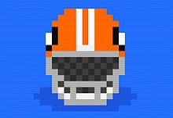

Hello! I like to code and sometime I write stuff too.
Most Recent ExCollege Class Post (11/15)

Retro Bowl
With Thanksgiving around the corner, there has only been one game on my mind. Football is synonymous with Thanksgiving, and I would argue the game Retro Bowl is synonymous with the game of football at this point. If you haven’t heard of Retro Bowl, it’s a arcade style mobile football game inspired by the game Tecmo Bowl. This game looks and feels similar to a game we looked at multiple weeks ago, Legend Bowl. One key difference is the simplicity of Retro Bowl. You have 2 main controls, you can juke left or right while running, or you can drag your finger back and release to throw.
Retro Bowl has become massively popular over the last year or so. Although the game was released in 2020, Retro Bowl picked up a lot of momentum of TikTok and has skyrocketed to being the #1 downloaded game on the app store. The main goal of the game is to manage a team - its players, its coaches, the salary cap, the stadium, team chemistry, and other similar components. Retro Bowl managed to use the NFL names, both for the teams (as in, you can actually play as the Buffalo Bills) and for the player names. I believe the player names are taken from an NFL database but then randomized to different players. For instance, on my current team I have players named Travis Gurley, Patrick Talib, Javonte Metcalf, etc. This is a fun detail to the game because most other football games have not received the rights to the NFL names (like Legend Bowl which has to use slightly altered names for their teams).
This Thanksgiving I would highly recommend that you and your friends and family download Retro Bowl and all compete to see who can win a championship first. Each season is 17 games, with playoffs, and if you’re good enough, you get a chance to win the “Retro Bowl.” The game is completely free, but there is an option to upgrade for $1.99 to a slightly more built out version. The upgraded version allows you to edit player names, increase the salary cap, add players to your personal hall of fame, and other fun bonus features. Although there is no cross-platform feature to the game, it’s still fun to play with other people. Given the simplicity of the game, anyone around you can quickly look over your shoulder and understand what’s happening - and either to praise you for your tremendous passing ability or scoff as you throw your third straight interception in the AFC championship.
The game allows for many different playthroughs as well. The games have 2-minute quarters, and you only play offense, meaning each game takes 5-10 minutes to play (depending on how much time you take to deliberate before calling “hike”). Because of the fast pace of the games and the seasons as a whole, it gives players the option to switch teams at the end of each season. With each new team comes new possibilities where you can build your team in whichever way you want. One season you could draft all wide receivers and a strong-arm quarterback, another season you could draft a running back and some offensive linemen, or you could ignore your offense entirely and draft a stacked defense and rely on RNG to win games.
For a simple looking game, Retro Bowl provides hours of fun. The simplistic, pixilated art style, and limited playing mechanics makes Retro Bowl fun for anyone. After only a few minutes of playing you can start enjoying the game, so this Thanksgiving gather everyone you know and see who can win the Retro Bowl first!